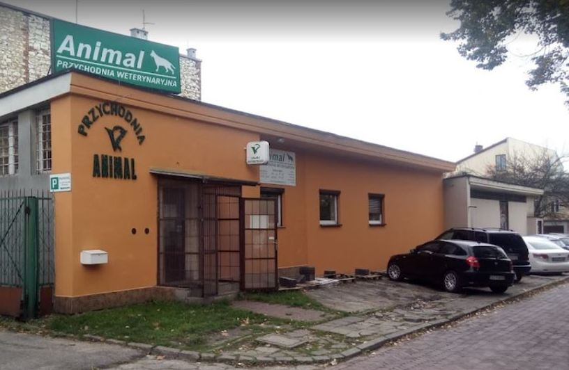

Zapraszamy
od poniedziału do piątku w godzinach 9:00-19:00 oraz w soboty w godz. 9:00-14:00
Adres
Przychodnia weterynaryjna "Animal"
42-200 Częstochowa
Al. P.O.W. 33
Dyżury
Olgierd Piotrowski:
poniedziałek, środa, piątek - godz. 9:00-13:00
wtorek, czwartek - godz. 14:00-19:00
tel. 606 392 358, 34 361 36 24
Artur Piega:
wtorek, czwartek - godz. 9:00-13:00
poniedziałek, środa, piątek - godz. 14:00-19:00
tel. 667 888 090, 34 361 36 24
Budynek przychodni
Dojazd